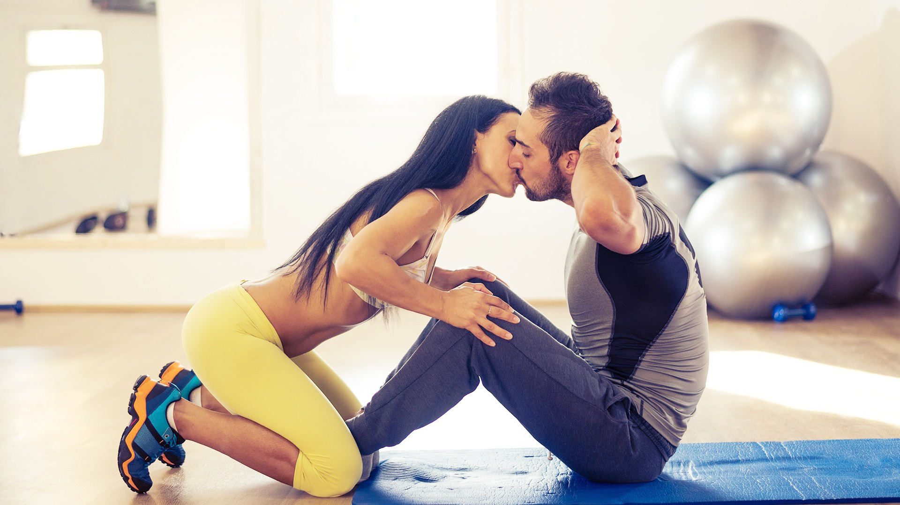

<!DOCTYPE html>
<html>
<head>
	<meta charset="utf-8">
	<link rel="stylesheet" type="text/css" href="../pagina-global.css"/>
	<link rel="stylesheet" type="text/css" href="../fonts.css">
	<title>Pagina Geral</title>
</head>
<body>
	<div id="banner_central">
		
	</div>

	<header>     <!-- Codigo do Menu Top,Assim ele repete nas paginas-->
		<nav>
			<ul>
				<li><a href="../index.html"><span class="primeiro"><i class="icon icon-switch"></i></span>Inicio</a></li>
				<li><a href="#"><span class="segundo"><i class="icon icon-film"></i></span>Mídia</a>
					<ul>
						<li><a href="musicas.html">Músicas</a></li>
						<li><a href="filmes.html">Filmes</a></li>
						<li><a href="jogos.html">Jogos</a></li>
						<li><a href="exercicios.html">Exercícios</a></li>
						<li><a href="decoracao.html">Decoração</a></li>
					</ul>
				</li>
				<li><a href="receitas.html"><span class="terceiro"><i class="icon icon-cake"></i></span>Receitas</a></li>
				<li><a href="experiencias.html"><span class="quarto"><i class="icon icon-lockedheart"></i></span>Experiências</a></li>
				<li><a href="formulario.html"><span class="quinto"><i class="icon icon-chat"></i></span>Registro</a></li>
			</ul>
		</nav> 
	</header>

	<div id="Conteudo">

		<figure><br><br><br><br><br><br><br><br>
		    <!-- imagem pra teste-->
		</figure><br>


		<h2>Treino a 2: série de exercícios para malhar a dois</h2><br>
		<p>
		Treinar a dois pode ser muito produtivo. Veja essa série de exercícios para malhar a dois, esculpir curvas perfeitas e, de quebra,<br>
		ficar mais pertinho do seu amor. Aproveite
		</p>

		<h3>Sucesso em dose dupla</h3>
		<p>
		Algumas dicas para o treino combinado dar supercerto:<br>
		- O primeiro passo é partir sempre para uma modalidade que agrade aos dois. Pode ser musculação, corrida...<br>
		- Estabeleçam um horário bom para o casal, para que o treino não vire mais um fator de estresse na agenda. <br>
		- Os objetivos podem até ser os mesmos, mas a evolução é individual. Não desanime, os homens tendem a ter<br>
		resultados mais rápidos. Com paciência e dedicação você também chega lá! <br>
		- Troque as críticas por elogios. Isso vai motivar seu parceiro, melhorar o entendimento entre vocês e, é claro, favorecer o treino.<br>	
		</p><br>

		
		
		<p>
		<strong>Rotação de tronco:</strong><br>
		Ambos de pé, pernas estendidas e paralelas e braços ao longo do tronco. Juntos, rotacionem o tronco em direções opostas, até tocarem as<br>
		mãos espalmadas um do outro. No final da série, invertam o lado.<br> 
		Foto: Caio Mello<br>
		</p>

		
		<p>
		<strong>Flexão de braços:</strong><br>	
		Ele deitado, com as pernas estendidas e paralelas e os braços ao longo do tronco. Você por cima dele, com as pontas dos pés no chão e as<br>
		mãos apoiadas acima dos ombros dele. Flexione os braços, descendo na direção do tronco do gato, até seu rosto ficar bem coladinho ao dele.<br>
		Volte devagar. No final da série, é a vez dele fazer a flexão.<br> 
		Foto: Caio Mello<br>	
		</p>

		
		<p>
		<strong>Abdominal reto:</strong> 
		Deitada, com as pernas flexionadas e as mãos atrás da cabeça. Ele de joelhos, com o tronco levemente inclinado e as mãos segurando os seus pés.<br> Flexione o tronco até tirar as costas do chão. Retorne lentamente. Quando terminar a série, segure os pés do gato para que ele também realize o<br>
		mesmo movimento.<br> 
		Foto: Caio Mello<br>	
		</p>

		
		<p>
		<strong>Posteriores de coxa:</strong><br> 
		Você deitada de barriga para baixo, com o abdome sobre uma almofada e as pernas semiestendidas. Ele de joelhos, com o tronco inclinado e as mãos<br>
		sobre os seus calcanhares. Flexione as pernas, aproximando os calcanhares dos glúteos, enquanto ele faz força para baixo com os braços. Volte<br>
		devagar. Depois, troquem de lugar.<br> 
		Foto: Caio Mello<br>	
		</p>

		<h5>By:corpoacorpo.uol.com.br</h5>


	</div>
</div>
</body>
</html>